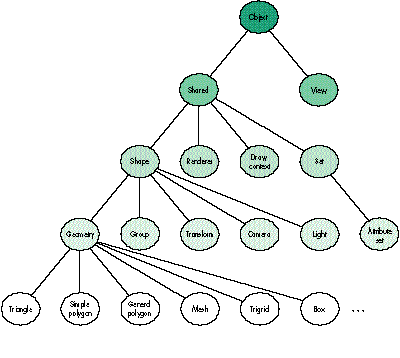

No matter how realistic or sophisticated you want your 3D images to be, you must
always build objects with the primitive geometric shapes provided by the graphics
system. Our article in Issue 22 gave the basic information you need to start developing
applications with QuickDraw 3D. Here we delve deeper into the primitive geometric
shapes provided by QuickDraw 3D and show how to use them effectively. We also give
you some tips we've gained from working with developers.
Geometric shapes -- or geometries -- form the foundation of any 3D scene.
QuickDraw 3D provides a rich set of primitive geometric types that you use to define
the shapes of things. You can apply attributes (such as colors) to geometric objects,
collect geometric objects into groups, and copy, illuminate, texture, transform, or
otherwise modify them to attain the visual effects you want. In other words,
everything that's drawn by QuickDraw 3D is either a geometry or a modification of a
geometry. So you need to know how to define geometries (and usually also how to create
and dispose of them) to work effectively with QuickDraw 3D. This article describes the
geometries available in QuickDraw 3D version 1.0 and shows how they relate to other
aspects of the QuickDraw 3D architecture (such as the class hierarchy).
We're assuming that you're already familiar with the basic capabilities of QuickDraw
3D. For a good introduction, see our article "QuickDraw 3D: A New Dimension for
Macintosh Graphics" in Issue 22 of develop (a copy is on this issue's CD). In that
article, we provided an overview of QuickDraw 3D's architecture and capabilities. You
can think of QuickDraw 3D as having three main parts: graphics, I/O (the QuickDraw
3D metafile), and human interface guidelines. Here, we provide more detail on the
graphics portion of the QuickDraw 3D API and highlight some parts of that API that
could use clarification as you try to implement geometries.
To help you get started using geometries, this issue's CD contains version 1.0 of the
QuickDraw 3D shared library and programming interfaces, sample code, and an
electronic version of the book 3D Graphics Programming With QuickDraw 3D, which
provides complete documentation for the QuickDraw 3D programming interfaces.
Our previous article included an introduction to rendering; we'll review a key concept
here -- retained vs. immediate rendering. We'll also elaborate on an important point
we glossed over in that article: submitting something to be rendered rather than just
rendering it. These concepts will help set the stage for what you'll learn here about
working with geometries.
RETAINED VS. IMMEDIATE MODE RENDERING
A powerful feature of QuickDraw 3D is that it supports both retained and immediate
modes for rendering geometric data; you can even mix these modes within the same
rendering loop. In retained mode, the definition and storage of the geometric data are
kept internal to QuickDraw 3D -- as abstract geometric objects. In immediate mode,
the application keeps the only copy of the geometric data; for efficiency, the
application should use QuickDraw 3D data structures to hold the data, but those
structures can be embedded in application-defined structures. Retained mode
geometric objects and immediate mode geometric data define the shapes of objects.
You'll typically use one or more primitive geometric types provided by QuickDraw 3D
(such as triangles or meshes) to build up a scene.
Whether you use retained or immediate mode to render geometries usually depends on
how much of a model changes from one rendering operation to the next. As we'll
illustrate with examples in this section, we prefer to use retained geometries most of
the time and to use immediate mode only for temporary objects. Since our preference
for retained mode is a departure from the traditional QuickDraw way of drawing, we'll
attempt to convince you that retained mode is a much more efficient method of
rendering geometries.
Immediate mode. When you use immediate mode rendering, the data that defines a
geometry is stored and managed by your application. For example, to draw a triangle
you would write code similar to that in Listing 1. If you wanted to draw this triangle
many times, or from different camera angles, you would have to maintain the data in
your application's data structures.
Listing 1. Rendering a triangle in immediate mode
TQ3TriangleData myTriangle;
// Set up the triangle with appropriate data.
...
// Render the triangle.
Q3View_StartRendering(myView);
do {
Q3Triangle_Submit(&myTriangle, myView);
} while (Q3View_EndRendering(myView) == kQ3ViewStatusRetraverse);
Typically when using immediate mode, you stick to a single type of geometry
(triangles are popular with developers accustomed to lower-level 3D graphics
libraries). If you use multiple geometric types, you need to define a data structure to
manage the order of the geometries. An example of rendering several geometries in
immediate mode is shown in Listing 2.
Listing 2. Rendering several geometries in immediate mode
typedef struct myGeometryStructure {
TQ3ObjectType type;
void *geom;
struct myGeometryStructure *next;
} myGeometryStructure;
myGeometryStructure *currentGeometry;
...
Q3View_StartRendering(myView);
do {
while (currentGeometry != NULL) {
switch (currentGeometry->type) {
case kQ3GeometryTypeTriangle:
Q3Triangle_Submit(
(TQ3TriangleData *) currentGeometry->geom, myView);
break;
case kQ3GeometryTypePolygon:
Q3Polygon_Submit(
(TQ3PolygonData *) currentGeometry->geom, myView);
break;
}
currentGeometry = currentGeometry->next;
}
} while (Q3View_EndRendering(myView) == kQ3ViewStatusRetraverse);
If you wanted to apply transforms to a geometry as it's being drawn, you would have to
add a new case to the switch statement. This gets complicated pretty quickly. As a
result, many developers, when given a choice, will use immediate mode only for
models that have a fixed geometry and are not being altered.
Retained mode. Creating geometric objects allows renderers to take advantage of
characteristics of particular geometries and thus optimize the drawing code. The code
in Listing 3 draws a triangle in retained mode.
Listing 3. Rendering a triangle in retained mode
TQ3TriangleData triangleData;
// Set up the triangle with appropriate data.
...
// Create the triangle.
triangleObject = Q3Triangle_New(&triangleData);
// Render the triangle.
Q3View_StartRendering(myView);
do {
Q3Object_Submit(triangleObject, myView);
} while (Q3View_EndRendering(myView) == kQ3ViewStatusRetraverse);
SUBMITTING
You'll notice that the routine to draw an object is Q3Object_Submit. This probably
seems a bit strange: why didn't we call it Q3Object_Draw? The reason is that there are
four occasions in which you need to specify a geometry -- when writing data to a file,
when picking, when determining the bounds of a geometry, and when rendering -- and
QuickDraw 3D provides a single routine that you use in all of these cases. To indicate
which operation you want to perform, you call the Submit routine inside a loop that
begins and ends with the appropriate calls. For instance, to render a model, you call
Submit functions inside a rendering loop, which begins with a call to
Q3View_StartRendering and ends with a call to Q3View_EndRendering (as shown in
Listing 3). Similarly, to write a model to a file, you call Submit functions inside a
writing loop, which begins with a call to Q3View_StartWriting and ends with a call to
Q3View_EndWriting.
We recommend that you put all your Submit calls together within a single function
(such as the one shown in Listing 4) that you can then call from your rendering loop,
picking loop, writing loop, or bounding loop. Organizing your code in this fashion will
prevent a common mistake: creating rendering loops that are out of sync with picking
or bounding loops. It also simplifies your rendering and picking loops -- you just call
your submitting function from within the loop. Here's an example of calling the
function in Listing 4 from within a rendering loop:
Q3View_StartRendering((**theDocument).fView);
do {
theStatus = SubmitScene(theDocument);
} while (Q3View_EndRendering((**theDocument).fView)
== kQ3ViewStatusRetraverse);
Listing 4. A submitting function
// Submit the scene for rendering, file I/O, bounding, or picking.
TQ3Status SubmitScene(DocumentHdl theDocument)
{
TQ3Vector3D globalScale, globalTranslate;
globalScale.x = globalScale.y = globalScale.z =
(**theDocument).fGroupScale;
globalTranslate = *(TQ3Vector3D *)&(**theDocument).fGroupCenter;
Q3Vector3D_Scale(&globalTranslate, -1, &globalTranslate);
Q3Style_Submit((**theDocument).fInterpolation,
(**theDocument).fView);
Q3Style_Submit((**theDocument).fBackFacing, (**theDocument).fView);
Q3Style_Submit((**theDocument).fFillStyle, (**theDocument).fView);
Q3MatrixTransform_Submit(&(**theDocument).fRotation,
(**theDocument).fView);
Q3ScaleTransform_Submit(&globalScale, (**theDocument).fView);
Q3TranslateTransform_Submit(&globalTranslate,
(**theDocument).fView);
Q3DisplayGroup_Submit((**theDocument).fModel,
(**theDocument).fView);
return (kQ3Success);
}
Even if you perform all your rendering in immediate mode -- that is, without creating
any QuickDraw 3D geometric objects -- you still need to create some QuickDraw 3D
objects, such as a view, camera, and draw context, in order to render any image at all.
So working with geometries in QuickDraw 3D means working with at least some
objects. Before going into detail about how to create and use QuickDraw 3D geometric
objects, let's review the object system and some of its basic classes.
QuickDraw 3D is an object-based system. We chose to implement the API with the C
language, which doesn't support objects directly; nevertheless QuickDraw 3D is
organized into a definite class hierarchy. Figure 1 shows part of this hierarchy,
emphasizing the classes that are discussed in this article. At the top of the class
hierarchy is the basic QuickDraw 3D Object class. Geometries, such as the triangle,
polygon, and mesh classes, are at the bottom of the hierarchy.
The Object class is really named TQ3Object. This article uses shortened forms of
the QuickDraw 3D class names.*

1. Partial QuickDraw 3D class hierarchy
You can determine the class in which a function is defined simply by looking at the
function's name: function names have the form Q3class-name_method. For example,
the function Q3Shared_GetReference is defined in the Shared class and returns a
reference to the shared object that's passed as an argument. The function
Q3Object_Dispose is defined in the Object class; it accepts any QuickDraw 3D object as
an argument (since Object is the root class) and disposes of it.
In the following sections, we'll talk more about the classes shown in Figure 1 and
answer some questions developers have had about using them when working with
geometries. Then we'll (finally!) talk about the geometric objects themselves and
provide sample code for using many of them.
Generally speaking, drawing anything with QuickDraw 3D involves working with
objects that inherit from the Shared class. There can be multiple references to shared
objects (hence the name); the way QuickDraw 3D determines whether a shared object
is still referenced is by way of a reference count, initially 1. Developers new to
QuickDraw 3D are sometimes confused by reference counts, but they're actually very
straightforward. When you create a shared object, its reference count is 1. For
example:
myNewObject = Q3Mesh_New(); // myNewObject now has a reference count of 1.
When you get a shared object as a result of a Get call, or pass one as an argument in an
Add or Set call, the object's reference count is incremented.
// The following calls increment the object's reference count.
Q3Group_GetPositionObject(myGroup, currentPosition,
&myExistingObject);
...
Q3Group_AddObject(myGroup, myObject);
...
Q3View_SetDrawContext(myView, myDrawContext);
Passing a shared object as the argument to a Dispose call decrements its reference
count; only when the count goes to 0 does QuickDraw 3D actually dispose of the
memory occupied by the object. As a general rule, you should dispose of the object
before the scope of the variable expires. For example:
{ // Start of the block. Variables come into scope.
TQ3Object myObject = Q3Mesh_New(); // The start of myObject's scope
// Do something that manipulates myObject.
...
// The scope of myObject is going to end at the next closing brace,
// so dispose of it before we go out of scope.
Q3Object_Dispose(myObject);
} // End of the block.
If you were assigning an object reference to a global variable, you would dispose of the
object before calling Q3Exit and exiting your program.
Q: Why does my application crash when I call Q3Exit?
A: In the debugging version of QuickDraw 3D, Q3Exit generates a debugging
message for each remaining object. The default behavior is to display the
message with the DebugStr call; the message is displayed in MacsBug (or
whatever debugger you use). So your application isn't crashing; it's trying to
tell you to tidy up after yourself! To avoid this unscheduled trip into your
debugger, you can install your own error handler and log the message to a file.
And, of course, you should fix your application so that it doesn't leak
memory!*
Let's take a closer look at what happens to reference counts when you create and
dispose of a shared object. Figure 2 shows the typical lifetime of a group of QuickDraw
3D objects (we'll talk more about groups later).
Figure 2. Reference counts in QuickDraw 3D
THE VIEW CLASS
The view object ties together the elements required to draw a scene; it's the central
object that holds the state information for rendering a scene. A scene consists of the
geometry being drawn (hereafter referred to as the model), together with the light,
camera, draw context, and other objects. Our previous article discussed how to set up a
view; we'll expand on that discussion by describing how to create and manage multiple
scenes of a model.
To display a scene, you need at least one view object, and each view object must have a
camera associated with it. Each of your application's windows usually has one view
object attached to it. When you need to display multiple scenes of the same model, you
can create multiple windows, each with its own view object. Then you simply submit
the model to the desired view. Alternatively, you can display multiple scenes using a
single view object by setting up several different cameras and draw contexts and
switching between them -- manipulating the view's camera to create each scene (see
Figure 3).
Figure 3. Multiple scenes of the same model
You can have only one active draw context and camera for each view object, so to update
one of your windows, you need to manually set the active draw context and camera for
the appropriate scene. For this reason, the first option (one view per window) is
usually simpler to implement.
THE GROUP CLASS
QuickDraw 3D provides a number of classes for grouping objects together. Groups are
useful because they provide a structure to your models, allowing you to express the
relationship between different geometric objects. Of course, if you want to use your
own data structures for storing your geometries, you can do so, but generally it's more
work. Using QuickDraw 3D's group classes, you can create hierarchies of geometric
data by nesting groups within other groups. Figure 4 shows the group classes provided
with QuickDraw 3D.
Figure 4. Group classes provided by QuickDraw 3D
You can create a group object by calling Q3Group_New. This creates an object
belonging to the generic Group class. QuickDraw 3D provides the following subgroups
of the generic Group class, which are distinguished by the types of objects you're
allowed to place in them:
Because we want to talk about geometries, which are drawable objects, we'll
concentrate on display group objects. In addition to "plain" display groups, there are
two specialized subclasses of the display group class: ordered and I/O proxy. For a
plain display group, the order in which items are placed in the group is the order in
which they're drawn when the group is submitted, regardless of the class that the
objects belong to. For an ordered display group, objects in the group are sorted by
object type and are submitted (when you call Q3DisplayGroup_Submit) in the
following order: transforms, styles, attribute sets, shaders, geometric objects,
groups.
Ordered display groups are most useful when you want to operate on a group of objects
as a single entity. For example, you know that transforms are always at the start of the
group, so you could manipulate the transform to alter the orientation of the entire
group. (If you were using a plain display group, you would have to search for the
transform, or otherwise store a reference to it, which makes life more complicated.)
Sometimes you'll want to nest a number of ordered display groups within a plain
display group. If you were animating a robotic arm, for example, each component of
the arm could be an ordered display group that's nested within a plain display group.
You can use I/O proxy display groups to provide multiple representations of the same
data. This is useful when dealing with applications that aren't based on QuickDraw 3D
or that run on other platforms. For example, some applications might be able to read
only mesh objects; your application may want to use NURB patches (another type of
geometric object), but you want other applications to be able to read your metafiles. In
this case, you could write a NURB patch representation of your data, followed by a
mesh representation. To provide both representations of the same data in a metafile,
you would create an I/O proxy group that contains the NURB patch object first and the
mesh object second, and write the group to the metafile. When you draw with
QuickDraw 3D, the objects that appear first in the group are preferred over later
objects in the group.
THE TRANSFORM CLASS
The Transform class enables you to change the position, orientation, or size of
geometries. When you specify the coordinates for the vertices that define a geometry,
the x, y, z values are expressed as floating-point values in local coordinates.
Rendering, however, and associated operations like backface removal and lighting are
performed in world coordinates. To transform a geometry from one space to another,
QuickDraw 3D multiplies the local coordinates by a local-to-world matrix. The default
value for this matrix is the identity matrix, which leaves the original geometry
unchanged. By changing the value of the local-to-world matrix, you can transform
geometries without having to change the geometries' coordinates.
Using an example from our previous article, let's say that you have a model that
contains several boxes (see Figure 5). We could enter the coordinates for the points
that make up each of the four boxes, but that's a lot of work (and if you're creating an
object for each box, it's a waste of memory). Instead, we define one box at a certain
location and call it the reference box. To get the effect of four boxes in different
locations, we draw the reference box four times -- changing the local-to-world
matrix each time before drawing.
Figure 5. Boxes drawn by changing the local-to-world matrix four
times
If you look in the file QD3DTransform.h, you'll notice that there are several different
types of transforms. The most general type is the matrix transform, which is a 4 x 4
matrix. To use this transform, you supply the translation, rotation, and scale values
in the appropriate entries of the matrix, as shown in Figure 6. You can do any type of
transform that can be expressed as a 4 x 4 matrix. In the figure, you can see that the
upper 3 x 3 submatrix is a rotation matrix, with the entries in the main diagonal
containing the scale factors for x, y, and z. The lower row contains the translation
factors.
Figure 6. A matrix transform
If you know which type of transform you'll be applying, however, it's better to use one
of the more specific types. In this way, QuickDraw 3D renderers and shaders will be
able to take advantage of the information contained in the transform; for example, if
your local-to-world matrix is just a translate transform, the renderer doesn't have to
transform normals before performing the backface removal operation (because
directions are not affected by translations). Also, using the more specific types
provides a better abstraction and tends to make the logic of your code easier to
understand (and you don't have to deal with all those pesky matrices).
When you change the local-to-world matrix by applying transforms, each transform
is concatenated as it's applied through a Submit call. For example, if before drawing a
point object, we submit a translate transform, a rotate transform, a scale transform,
and then a point, the point will be transformed as follows:
p' = p * S * R * T
p' is the resulting transformed point and p is the original point. T is the matrix
containing the translate operation, R is the matrix containing the rotate operation, and
S is the matrix containing the scale operation.
You can apply transforms either by using immediate mode calls or by creating
transform objects -- just as you do for geometries. Note that transforms accumulate;
that is, if you apply a translation, any objects drawn after that will be translated by
the same amount. If you want a transform to apply to a certain object only, you can use
the Q3Push_Submit and Q3Pop_Submit calls around it or place the object in a group,
since groups perform an implicit push and pop (you can change this behavior if you
want).
So, let's build on what we've learned so far. We want to draw the model shown in
Figure 5. Let's first do it by submitting new transforms in immediate mode, before
each box is drawn, as shown in Listing 5.
Listing 5. Using translate transforms in immediate mode
Q3View_StartRendering(viewObject);
do {
TQ3Vector3D translationX = {2.0, 0.0, 0.0},
translationY = {0.0, -2.0, 0.0};
Q3View_Push(viewObject);
// Note how we are using a retained mode geometry with immediate
// mode transforms. As we execute each of the calls, the boxes
// are drawn.
Q3Object_Submit(referenceBox, viewObject);
// Move to the right.
Q3TranslateTransform_Submit(&translationX, viewObject);
Q3Object_Submit(referenceBox, viewObject);
// The Pop will move back to the left.
Q3View_Pop(viewObject);
// Move down.
Q3TranslateTransform_Submit(&translationY, viewObject);
Q3Object_Submit(referenceBox, viewObject);
// Move to the right.
Q3TranslateTransform_Submit(&translationX, viewObject);
Q3Object_Submit(referenceBox, viewObject);
} while (Q3View_EndRendering(viewObject) == kQ3ViewStatusRetraverse);
Alternatively, we could create the model of the four boxes as a group, as shown in
Listing 6.
Listing 6. Creating translate transform objects
TQ3GroupObject myModel;
TQ3Vector3D translationX = {2.0, 0.0, 0.0},
translationYAndNegativeX = {-2.0, -2.0, 0.0};
TQ3TransformObject xform_x, xform_yx;
// Note that as we execute these calls, nothing is drawn.
myModel = Q3Group_New();
xform_x = Q3TranslateTransform_New(&translationX);
xform_yx = Q3TranslateTransform_New(&translationYAndNegativeX);
Q3Group_AddObject(myModel, referenceBox);
Q3Group_AddObject(myModel, xform_x);
Q3Group_AddObject(myModel, referenceBox);
Q3Group_AddObject(myModel, xform_yx);
Q3Group_AddObject(myModel, referenceBox);
Q3Group_AddObject(myModel, xform_x);
Q3Group_AddObject(myModel, referenceBox);
// To draw the boxes, you would call Q3Object_Submit(myModel, myView)
// within a submitting loop.
THE ATTRIBUTE SET CLASS
Attributes affect the way an object is rendered in QuickDraw 3D. A view has a default
set of attributes, defined in the QD3DView.h file, that can be modified to suit a
particular application. If no attributes are supplied for the objects being rendered
within a view, the default view attributes are applied. Attributes can be applied in a
number of ways: by submitting them to a view object; by adding them to a group; or by
attaching them to a geometry, to a geometry's face, or to each vertex of a geometry.
The order in which attribute sets are applied during rendering is based on a fixed
hierarchy, as illustrated in Figure 7. Attributes of the same type (such as diffuse
color) can override one another; they use the following preference hierarchy, from
highest to lowest precedence: vertex, face, geometry, group, view. For example, a
specular color attribute at the vertex level does not override a diffuse color attribute
at the geometry level, whereas a specular color attribute at the vertex level does
override a specular color attribute at the geometry level (because they are attributes
of the same type). If attributes at any level are not supplied, the parent's attributes
apply. If there are no attributes supplied anywhere in the hierarchy, the default
attribute set for the view will be used.
Figure 7. Hierarchy of applying attributes to a geometry
Here are the six most commonly used predefined attribute types that you can specify
(there are 12 in all):
You can also define your own custom attributes. Later, in the geometry code samples,
we'll create attribute sets to affect the way the geometries are drawn.
Now we're ready to look at the specific geometries and show how to build them.
QuickDraw 3D version 1.0 supports 12 geometries (illustrated in Figure 8). In the
code examples later in this article, we'll cover the most commonly used geometries.
Figure 8. QuickDraw 3D geometries supplied in version 1.0
NURB stands for nonuniform rational B-spline. A B-spline is a parametric curve
(a curve defined by coordinates derived from functions sharing a common parameter)
whose shape is determined by a series of control points whose influence is described
by basis functions.*
SIMPLE GEOMETRIES
Let's start with some simple geometries first: lines, polylines, triangles, simple
polygons, and general polygons. In essence, these are the building blocks for
QuickDraw 3D. You can use combinations of these to construct your model, or you can
use some of the composite geometries, such as meshes and trigrids (described later).
Line and polyline objects. Lines are defined by two noncoincident points. If you want to
have multiple line segments, you can use polylines (see Listing 7). In polylines, every
vertex after the first one defines a new line. You can attach attributes at the geometry
level or at the vertex level (which is useful for having multicolored lines, but
remember that you need to use per-vertex interpolation when rendering in order for
the multiple colors to apply).
Listing 7. Creating a polyline
TQ3ColorRGB polyLineColor;
TQ3PolyLineData polyLineData;
TQ3GeometryObject polyLineObject;
static TQ3Vertex3D
points[4] = { { { -1.0, -0.5, -0.25 }, NULL }, // first vertex
{ { -0.5, 1.5, 0.45 }, NULL }, // second vertex
{ { 0.0, 0.0, 0.0 }, NULL }, // third vertex
{ { 1.5, 1.5, 1.0 }, NULL } // fourth vertex
};
// The polyline has four vertices.
polyLineData.numVertices = 4;
polyLineData.vertices = points;
// Add a color to the line as a whole.
polyLineData.polyLineAttributeSet = Q3AttributeSet_New();
Q3ColorRGB_Set(&polyLineColor, 0.4, 0.2, 0.9);
AttributeSet_AddDiffuseColor(polyLineData.polyLineAttributeSet,
&polyLineColor);
// Create the polyline.
polyLineObject = Q3PolyLine_New(&polyLineData);
Q3Object_Dispose(polyLineData.polyLineAttributeSet);
Triangle objects. Triangles are the most basic of the planar geometries in
QuickDraw 3D. Triangles are defined by three noncolinear, noncoincident vertices. In
Listing 8, we set a color attribute for the entire geometry and for the individual
vertices. When you draw the triangle with flat interpolation, the geometry color is
used; when you draw it with per-vertex interpolation, however, the vertex attributes
take precedence and you can see a color ramp on the triangle (see Figure 8, where the
color ramp is approximated in grayscale).
Listing 8. Creating a triangle in a group
TQ3ColorRGB triangleColor;
TQ3GroupObject model;
TQ3TriangleData triangleData;
TQ3GeometryObject triangleObject;
static TQ3Vertex3D
vertices[3] = { { { -1.0, -0.5, -0.25 }, NULL },
{ { 0.0, 0.0, 0.0 }, NULL },
{ { -0.5, 1.5, 0.45 }, NULL } };
triangleData.vertices[0] = vertices[0];
triangleData.vertices[1] = vertices[1];
triangleData.vertices[2] = vertices[2];
triangleData.triangleAttributeSet = Q3AttributeSet_New();
Q3ColorRGB_Set(&triangleColor, 0.8, 0.5, 0.2);
AttributeSet_AddDiffuseColor(triangleData.triangleAttributeSet,
&triangleColor);
triangleData.vertices[0].attributeSet = Q3AttributeSet_New();
triangleData.vertices[1].attributeSet = Q3AttributeSet_New();
triangleData.vertices[2].attributeSet = Q3AttributeSet_New();
Q3ColorRGB_Set(&triangleColor, 1.0, 0.0, 0.0);
AttributeSet_AddDiffuseColor(triangleData.vertices[0].attributeSet,
&triangleColor);
Q3ColorRGB_Set(&triangleColor, 0.0, 1.0, 0.0);
AttributeSet_AddDiffuseColor(triangleData.vertices[1].attributeSet,
&triangleColor);
Q3ColorRGB_Set(&triangleColor, 0.0, 0.0, 1.0);
AttributeSet_AddDiffuseColor(triangleData.vertices[2].attributeSet,
&triangleColor);
// Create the triangle and group.
triangleObject = Q3Triangle_New(&triangleData);
model = Q3OrderedDisplayGroup_New();
if (triangleObject != NULL) {
Q3Group_AddObject(model, triangleObject);
Q3Object_Dispose(triangleObject);
}
Q3Object_Dispose(triangleData.vertices[0].attributeSet);
Q3Object_Dispose(triangleData.vertices[1].attributeSet);
Q3Object_Dispose(triangleData.vertices[2].attributeSet);
Q3Object_Dispose(triangleData.triangleAttributeSet);
Simple polygon and general polygon objects. Simple polygons and general
polygons are planar objects with multiple vertices. Simple polygons must be convex,
but general polygons can be either convex or concave. In addition, general polygons can
be self-intersecting and have multiple contours.
As was shown in Figure 8, a general polygon can have a "hole" in it, but a simple
polygon never does. This is the primary difference between the two geometries.
Processing general polygons takes more time than processing simple polygons, so we
advise you to use simple polygons whenever possible.
If the geometry you're creating is convex, you should use simple polygons to achieve
better performance. If your polygons always have three vertices, however, you should
opt for triangles. If you don't know what your geometry looks like (for example, it's
being built by the user on the fly and you don't want to check the points), use general
polygons and set the complexity flag to kQ3GeneralPolygonShapeHintComplex (see
Listing 9). Renderers look at this flag as a hint on how to process the general polygon.
Listing 9. Creating polygons
TQ3PolygonData polygonData;
TQ3GeneralPolygonData genPolyData;
TQ3GeometryObject polygonObject, generalPolygonObject;
TQ3GeneralPolygonContourData contours[2];
TQ3ColorRGB color;
static TQ3Vertex3D polyVertices[4] = {
{ { -1.0, 1.0, 0.0 }, NULL },
{ { -1.0, -1.0, 0.0 }, NULL },
{ { 1.0, -1.0, 0.0 }, NULL },
{ { 1.0, 1.0, 0.0 }, NULL }
},
genPolyHoleVertices[4] = {
{ { -0.5, 0.5, 0.0 }, NULL },
{ { -0.5, -0.5, 0.0 }, NULL },
{ { 0.5, -0.5, 0.0 }, NULL },
{ { 0.5, 0.5, 0.0 }, NULL }
};
polygonData.numVertices = 4; polygonData.vertices = polyVertices;
polygonData.polygonAttributeSet = NULL;
polygonObject = Q3Polygon_New(&polygonData);
contours[0].numVertices = 4; contours[0].vertices = polyVertices;
contours[1].numVertices = 4;
contours[1].vertices = genPolyHoleVertices;
genPolyData.numContours = 2; genPolyData.contours = contours;
genPolyData.shapeHint = kQ3GeneralPolygonShapeHintComplex;
genPolyData.generalPolygonAttributeSet = Q3AttributeSet_New();
Q3ColorRGB_Set(&color, 1.0, 1.0, 1.0);
AttributeSet_AddDiffuseColor(genPolyData.generalPolygonAttributeSet,
&color);
polyVertices[1].attributeSet = Q3AttributeSet_New();
polyVertices[2].attributeSet = Q3AttributeSet_New();
Q3ColorRGB_Set(&color, 0.0, 0.0, 1.0);
AttributeSet_AddDiffuseColor(polyVertices[1].attributeSet, &color);
Q3ColorRGB_Set(&color, 0.0, 1.0, 1.0);
AttributeSet_AddDiffuseColor(polyVertices[2].attributeSet, &color);
genPolyHoleVertices[0].attributeSet = Q3AttributeSet_New();
genPolyHoleVertices[2].attributeSet = Q3AttributeSet_New();
Q3ColorRGB_Set(&color, 1.0, 0.0, 1.0);
AttributeSet_AddDiffuseColor(genPolyHoleVertices[0].attributeSet,
&color);
Q3ColorRGB_Set(&color, 1.0, 1.0, 0.0);
AttributeSet_AddDiffuseColor(genPolyHoleVertices[2].attributeSet,
&color);
generalPolygonObject = Q3GeneralPolygon_New(&genPolyData);
Q3Object_Dispose(genPolyData.generalPolygonAttributeSet);
Q3Object_Dispose(polyVertices[1].attributeSet);
Q3Object_Dispose(polyVertices[2].attributeSet);
Q3Object_Dispose(genPolyHoleVertices[0].attributeSet);
Q3Object_Dispose(genPolyHoleVertices[2].attributeSet);
GETTING FANCY
There's nothing wrong with using only simple geometries, as described above. You can
build any complex object just with triangles, but from a performance point of view
that's not always the best thing to do. When your object is made up of faces that share
vertices, it's a good idea to use a representation that allows the graphics system to
reuse the vertex information (such as lighting calculations) for the shared vertices.
With a box, for example, each vertex is shared by three faces, where each face is made
up of two triangles. If we draw the box as a bunch of triangles, QuickDraw 3D would
have to perform the same lighting calculations on each vertex up to six times. If, on
the other hand, we represent the box as a box primitive or mesh object, the lighting
calculations are performed only once per vertex. (However, if you attach vertex
colors or face attributes, such as normals or colors, the calculations need to be
performed more often.)
Here we show how to use two composite geometries -- trigrid and mesh objects -- as
well as UV parameterization, which you may need to supply if you want to apply a
texture to a trigrid or mesh.
Trigrid objects. Trigrids are a collection of triangles that share vertices. We
create a trigid in Listing 10.
Listing 10. Creating a trigrid
TQ3ColorRGB triGridColor;
TQ3GroupObject model;
TQ3TriGridData triGridData;
TQ3GeometryObject triGridObject;
unsigned long numFacets, i;
static TQ3Vertex3D
vertices[12] = { { { -1.0, -1.0, 0.0 }, NULL },
... // 10 more lines of vertex data
{ { 0.7, 1.0, 0.5 }, NULL }};
triGridData.numRows = 3; triGridData.numColumns = 4;
triGridData.vertices = vertices;
triGridData.triGridAttributeSet = Q3AttributeSet_New();
Q3ColorRGB_Set(&triGridColor, 0.8, 0.7, 0.3);
AttributeSet_AddDiffuseColor(triGridData.triGridAttributeSet,
&triGridColor);
numFacets = (triGridData.numRows - 1) * (triGridData.numColumns - 1)
* 2;
triGridData.facetAttributeSet =
malloc(numFacets * sizeof(TQ3AttributeSet));
for (i = 0; i < numFacets; i++) {
triGridData.facetAttributeSet[i] = NULL;
}
Q3ColorRGB_Set(&triGridColor, 1.0, 0.0, 0.5);
triGridData.facetAttributeSet[5] = Q3AttributeSet_New();
AttributeSet_AddDiffuseColor(triGridData.facetAttributeSet[5],
&triGridColor);
triGridObject = Q3TriGrid_New(&triGridData);
UV parameterization. Texturing allows you to have more realistic looking models.
For texturing to work, the geometry must have UV parameters on its vertices, which
may have to be supplied by you. The UV parameters are two floating-point values (U
and V) that correlate a location on the geometry to a point in the picture of the texture
(see Figure 9).
Figure 9. UV parameters on a trigrid's vertices for texture mapping
The convention for QuickDraw 3D is to start the UV parameters at 0.0,0.0 at the
bottom left, with U increasing toward the right and V increasing upward. You supply
the UV parameterization as a collection of vertex attributes.
Once a UV parameterization has been applied to a surface's vertices, the surface can be
texture mapped. There are several steps to texturing surfaces with QuickDraw 3D. In
general, you'll already have a texture stored in a pixel map somewhere. What you need
to do is create a texture shader (of type TQ3TextureObject) and add it into your display
group before you add the geometry you want to shade.
Listing 11 is a general-purpose routine for adding a texture shader to a group. It's
interesting for a number of reasons: it shows how to search a group for particular
objects (in this case, an existing shader that it will replace), how to edit items within
a group, and how to add new items.
Listing 11. Routine to texture-map an object
TQ3Status AddTextureToGroup(TQ3GroupObject theGroup,
TQ3StoragePixmap *textureImage)
{
TQ3TextureObject textureObject;
TQ3GroupPosition position;
TQ3Object firstObject;
// Create a texture object.
textureObject = Q3PixmapTexture_New(textureImage);
if (textureObject) {
if (Q3Object_IsType(theGroup, kQ3GroupTypeDisplay) == kQ3True) {
// If the group is a display group...
Q3Group_GetFirstPosition(theGroup, &position);
Q3Group_GetPositionObject(theGroup, position, &firstObject);
if (Q3Object_IsType(firstObject, kQ3SurfaceShaderTypeTexture)
== kQ3True) {
TQ3TextureObject oldTextureObject;
TQ3StoragePixmap oldTextureImage;
// Replace existing texture by new one.
Q3TextureShader_GetTexture(firstObject,
&oldTextureObject);
Q3PixmapTexture_GetPixmap(oldTextureObject,
&oldTextureImage);
Q3Object_Dispose(oldTextureObject);
Q3TextureShader_SetTexture(firstObject, textureObject);
Q3Object_Dispose(textureObject);
} else {
TQ3ShaderObject textureShader;
// Create texture shader and add it to group.
textureShader = Q3TextureShader_New(textureObject);
if (textureShader) {
Q3Object_Dispose(textureObject);
Q3Group_AddObjectBefore(theGroup, position,
textureShader);
Q3Object_Dispose(textureShader);
} else
return (kQ3Failure);
}
Q3Object_Dispose(firstObject);
} else if (Q3Object_IsType(theGroup, kQ3DisplayGroupTypeOrdered)
== kQ3True) {
// If the group is an ordered display group...
TQ3ShaderObject textureShader;
Q3Group_GetFirstPositionOfType(theGroup, kQ3ShapeTypeShader,
&position);
if (position) {
Q3Group_GetPositionObject(theGroup, position,
&firstObject);
if (Q3Object_IsType(firstObject,
kQ3SurfaceShaderTypeTexture) == kQ3True) {
TQ3TextureObject oldTextureObject;
TQ3StoragePixmap oldTextureImage;
// Replace existing texture by new one.
Q3TextureShader_GetTexture(firstObject,
&oldTextureObject);
Q3PixmapTexture_GetPixmap(oldTextureObject,
&oldTextureImage);
Q3Object_Dispose(oldTextureObject);
Q3TextureShader_SetTexture(firstObject, textureObject);
Q3Object_Dispose(textureObject);
} else {
// Create texture shader and add it to group.
textureShader = Q3TextureShader_New(textureObject);
if (textureShader) {
Q3Object_Dispose(textureObject);
Q3Group_SetPositionObject(theGroup, position,
textureShader);
Q3Object_Dispose(textureShader);
} else
return (kQ3Failure);
}
} else {
// Create texture shader and add it to group.
textureShader = Q3TextureShader_New(textureObject);
if (textureShader) {
Q3Object_Dispose(textureObject);
Q3Group_AddObject(theGroup, textureShader);
Q3Object_Dispose(textureShader);
} else
return (kQ3Failure);
}
}
return (kQ3Success);
} else // If pixmap shader not created...
return (kQ3Failure);
}
Mesh objects. Listing 12 shows the key components needed to create a simple mesh
geometry. We create a mesh consisting of two faces, with one of them having a hole. We
also add UV parameters to the vertices so that we can texture-map the mesh. Figure 10
shows the texture map and the resulting textured mesh.
Listing 12. Creating a mesh
TQ3GroupObject BuildMesh(void)
{
TQ3ColorRGB meshColor;
TQ3GroupObject model;
TQ3Vertex3D vertices[9] = {
{ { -0.5, 0.5, 0.0 }, NULL },
{ { -0.5, -0.5, 0.0 }, NULL },
{ { 0.0, -0.5, 0.3 }, NULL },
{ { 0.5, -0.5, 0.0 }, NULL },
{ { 0.5, 0.5, 0.0 }, NULL },
{ { 0.0, 0.5, 0.3 }, NULL },
{ { -0.4, 0.2, 0.0 }, NULL },
{ { 0.0, 0.0, 0.0 }, NULL }
};
TQ3Param2D verticesUV[9] = {
{ 0.0, 1.0 }, { 0.0, 0.0 }, { 0.5, 0.0 },
{ 1.0, 0.0 }, { 1.0, 1.0 }, { 0.5, 1.0 },
{ 0.1, 0.8 }, { 0.5, 0.5 }, { 0.1, 0.4 }
};
TQ3MeshVertex meshVertices[9];
TQ3GeometryObject meshObject;
TQ3MeshFace meshFace;
TQ3AttributeSet faceAttributes;
unsigned long i;
meshObject = Q3Mesh_New();
Q3Mesh_DelayUpdates(meshObject);
for (i = 0; i < 9; i++) {
TQ3AttributeSet vertexASet;
meshVertices[i] = Q3Mesh_VertexNew(meshObject, &vertices[i]);
vertexASet = Q3AttributeSet_New();
AttributeSet_AddSurfaceUV(vertexASet, &verticesUV[i]);
Q3Mesh_SetVertexAttributeSet(meshObject, meshVertices[i],
vertexASet);
Q3Object_Dispose(vertexASet);
}
faceAttributes = Q3AttributeSet_New();
Q3ColorRGB_Set(&meshColor, 0.3, 0.9, 0.5);
AttributeSet_AddDiffuseColor(faceAttributes, &meshColor);
meshFace = Q3Mesh_FaceNew(meshObject, 6, meshVertices,
faceAttributes);
Q3Mesh_FaceToContour(meshObject, meshFace,
Q3Mesh_FaceNew(meshObject, 3, &meshVertices[6], NULL));
Q3Mesh_ResumeUpdates(meshObject);
model = Q3OrderedDisplayGroup_New();
Q3Group_AddObject(model, meshObject);
Q3Object_Dispose(faceAttributes);
Q3Object_Dispose(meshObject);
return (model);
}
Figure 10. Texture map applied to a mesh
Q3Mesh_DelayUpdates and Q3Mesh_ResumeUpdates, used in Listing 12, are two very
important routines. Mesh objects can often contain hundreds and even thousands of
vertices. When you're building a complex model, we advise that you turn off updates to
the internal ordering of the mesh data, so that building the mesh takes as little time as
possible. The difference between doing this and not doing this can be, in the case of a
complex model containing 3000 polygons, several minutes when
Q3Mesh_DelayUpdates is not called, compared with 3 seconds when it is called (on a
mid-level computer).
We hope that the hints in this article will save you some time and help you in your
development process. We've been pleasantly surprised by some of the applications in
which developers have been putting QuickDraw 3D to use; for example, a European
developer used QuickDraw 3D to prproduce 3D representations of his code profiler
application's data. Learning the basics of QuickDraw 3D's geometries is the first step
toward mining the rich seam of functionality that QuickDraw 3D offers.
NICK THOMPSON (AppleLink NICKT) from Apple's Developer Technical Support
group took a trip to Las Vegas this year in a rented Cadillac. He was impressed by some
of the ancient architecture on show in this fine city, such as the Pyramid of Luxor,
Excalibur's Castle, and Caesar's Palace (he was surprised that the ancient Egyptians,
King Arthur, and the Roman emperor had all made it that far west). He was also
impressed by the free food and drinks -- all he had to do was sit at a table and buy
small plastic disks with green scraps of paper that the got from a hole in the wall.
Having rented a Cadillac for this trip, Nick now has his heart set on a 1968 Eldorado
convertible.*
PABLO FERNICOLA (AppleLink PFF, eWorld EscherDude), the short one in the
picture, is the brains behind the operation. His hobbies include traveling to exotic
places (such as the local supermarket), eating fine cuisine, and talking to his dog (who
is almost as big as Nick, and probably a lot smarter). He's hard at work on the next
generation of QuickDraw 3D, which--like Pablo--is bound to be even smarter. Pablo
says, "You can use QuickDraw 3D's metafile format everywhere, even for defining
virtual environments on the net. So get those applications ready, won't you?"*
Thanks to our technical reviewers Tom Dowdy, Tim Monroe, and Philip Schneider.*